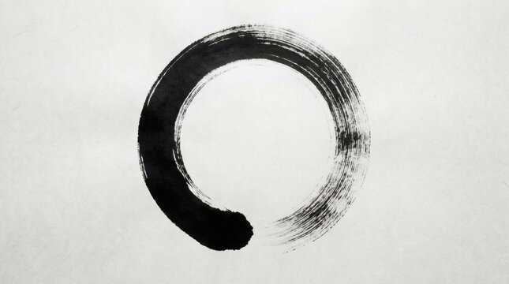

Cada día es un buen día[1]
Una mirada Zen a los problemas
“Cada día es un buen día”. Omori Sogen, un maestro Zen líder, profesor de Kendo (esgrima), y calígrafo de Japón moderno, usaba este dicho para describir cómo alguien, madurado a través de largo y arduo entrenamiento Zen, experimenta la vida. Luego de la derrota de Japón en la Segunda Guerra Mundial, Omori Roshi (título de maestro Zen, literalmente viejo maestro) y su familia, como muchos otros, se encontraban empobrecidos y tenían poco para comer. En sus palabras, “A veces éramos tan pobres que, incluso si buscábamos por toda la casa no podíamos encontrar ni un centavo. Así de pobre fue la vida que le causé a mi esposa. El mayor tiempo que estuvimos sin comida fue entre cinco días y una semana, pero no morimos de hambre. Si bebíamos sólo agua podíamos vivir”. Su hija de tres años se enfermó de meningitis tuberculosa y podría haber sido curada con penicilina, pero el costo estaba fuera de alcance. Omori Roshi recordó, “Al final, lo único que podíamos hacer era ver a nuestra propia hija sufrir y morir frente a nuestros ojos. Al morir su hija, mi esposa lloró a solas todas las noches por tres años. Para un padre, no hay algo más triste que ver la muerte de tu propia hija”. Frente a una tristeza así, ¿a qué se podría referir Omori Roshi al decir que cada día es un buen día? ¿A qué se podría referir frente a la tragedia y terror que se ve rutinariamente en los noticieros, los cuales al momento de este escrito eran los refugiados sirios y la masacre en París?
“Cada día es un buen día” no es una perspectiva Pollyanaica que niega todo este sufrimiento. “La existencia es sufrimiento” suele recitarse como la Primera Noble Verdad de Buddha. “Cada día es un buen día” debe significar que el espíritu humano puede trascender la existencia como sufrimiento. Para Omori Roshi, una persona que ha comprendido su Verdadero Self a través de largo y arduo entrenamiento en el Zen podrá expresar la luminosidad de la naturaleza original incluso en medio del sufrimiento. Para una persona así, cada día es un buen día.
Fudoshin: La Mente Inamovible
Si se toma “Cada día es un buen día” como un koan (un problema impenetrable a una solución racional, como “¿Cuál es el sonido de una mano aplaudiendo? O ¿Cuál es el sentido de la vida?”), uno se podría preguntar a sí mismo cada noche, “¿Fue hoy un buen día?” Para responder, uno podría considerar los momentos desperdiciados, momentos de orgullo y arrepentimiento, momentos de felicidad y tristeza, momentos de ansiedad y calma, momentos de pérdida y ganancia, y así sucesivamente. Desde la perspectiva Zen, si no hubiese sido un buen día, la mente se debe haber detenido; el flujo de conciencia se debe haber quedado atascado en un apego; y los pensamientos se deben haber transformado en ilusiones que te causaron sufrimiento. Durante el día, deberías haber caído en lo que Takuan Soho llamó “la morada (el lugar) de la ignorancia y su perturbación afectiva”. Experimentar cada día como un buen día es experimentar la mente que no se mueve porque no se detiene momento a momento con lo que sea que se encuentre, ni siquiera con el dolor. Más al punto, si hoy no es un buen día, en este mismo momento tu mente está detenida.
Takuan era el profesor de Shogun Tokugawa Iemitsu, el gobernador de Japón de 1623 a 1651, y del gran espadachín Yagyu Tajima Munenori (1568-1646). Le escribió cartas a Yagyu instruyéndole acerca de la Mente Inamovible en el contexto de la esgrima. Estas cartas fueron recopiladas en una colección llamada Fudochi Shimmyo-roku (Los Registros de la Maravillosa Mente de Sabiduría Inamovible), el cual es estudiado como un texto fundamental en Chozen-ji, un templo Zen Rinzai fundado por Omori Roshi y su estudiante Tanouye Tenshin (1938-2003) en Hawái. Tanouye Roshi era un genio en el camino marcial, experto en artes como el Kendo, Judo, Karate, Iaido (el arte de desenfundar la espada), y Jojitsu (el arte del bastón). Tanouye Roshi era también un asesor para muchos de los líderes políticos, de negocios y de comunidades en Hawái. La interpretación del Zen en este capítulo está basada principalmente en sus enseñanzas.
Si tomamos la esgrima como una metáfora para la vida, las instrucciones de Takuan acerca de la Mente Inamovible nos dicen que para hacer de cada día un buen día debemos encontrar los problemas de nuestras vidas sin detenernos. La enseñanza central dice:
No moverse significa no detenerse con un objeto que se encuentra. No moverse significa no detenerse con un objeto que se ve. Porque si la mente se detiene en cualquier objeto, será perturbada con pensamientos y emociones. Esto llevará a movimiento en la mente y el corazón. El detenerse inevitablemente lleva al moverse que es perturbación; entonces, no va a haber libertad de movimiento. Por ejemplo, supongamos que diez hombres se oponen a ti, cada uno en sucesión listos para abatirte con una espada. Ukenagasu (desviar, literalmente, recibir y dejar fluir) al primero sin detener tu mente. Olvida a ese hombre y encuentra al siguiente y de esta manera, a pesar de que hay diez hombres, todos serán lidiados de manera sucesiva y exitosa.
En el caso de tu esgrima, por ejemplo, cuando el oponente intenta asestarte un golpe y tus ojos captan el movimiento de su espada y puedes intentar seguirla, pero apenas esto ocurre tu mente se detiene en la espada del oponente. Tus movimientos perderán su libertad, y serás asesinado por tu oponente. A esto me refiero con detenerse.
En el budismo, este “detenerse” se le llama mayoi (ilusión); entonces, “la morada de la ignorancia y su perturbación afectiva”
Cuando la mente se detiene, pensamientos ilusorios son creados y las emociones se agitan. Desde la perspectiva Zen, este detenerse de la mente es el problema, no algo externo a uno mismo. La mente se detiene por los apegos. El problema del samurái era el de liberarse a sí mismo incluso del apego instintivo a la vida, de manera que su mente no se detuviese en una pelea a muerte. Si estuviese apegado a la vida y temiese la muerte, su mente se movería y se detendría en la espada del oponente. En el momento crítico, cuando las espadas se cruzan, se congelaría y sería asesinado.
En la vida, no moverse significa no detenerse con cualquier problema que venga hacia ti. Sin embargo, los problemas en la vida difieren de la esgrima en dos maneras críticas. La acción natural que fluye de la mente no deteniéndose puede de hecho requerir pensamiento, en el sentido de la resolución de problemas racional, y puede no requerir demasiado movimiento físico. El “pensar” que se deplora en el Zen es la especulación vacía, el arrepentimiento del pasado y la preocupación por el futuro, no la racionalidad. Este pensamiento resulta en “la angustia de los pensamientos alimentándose de pensamientos”. La resolución de problemas racional es una técnica necesaria para la vida moderna, pero cuando una persona limita la cognición a su técnica, puede entender la realidad únicamente de manera dualista y reduce el Verdadero Self a un ego. Las acciones de su vida no serán maravillosas y no podrá trascender los problemas existenciales de la vida. Maravilloso no necesariamente significa milagroso. El comportamiento ordinario y pensamiento racional ocurriendo de manera natural sin que la mente se detenga son maravillosos.
Para ofrecer un ejemplo mundano acerca de la diferencia entre la resolución de problemas racional y la detención de la mente, tomemos hacer los impuestos. Hacer los impuestos sin que la mente se detenga significa no procrastinar, estar concentrado y ser racional cuando se ordenan los ingresos y los gastos, y aceptar las obligaciones cívicas y requerimientos legales sin perturbación emocional. Si la mente se detiene al hacer los impuestos, aparece la evitación de la tarea, especulación improductiva acerca de pagar demasiado o muy poco, y ansiedad acerca de un resultado que no se puede cambiar. Hacer los impuestos será un proceso ineficiente e innecesariamente estresante. Si un espadachín pelease así, lo matarían.
Los apegos como fijaciones
Si tu mente se detiene y te quedas pegado en una situación, significa que tienes un apego que debes dejar ir. Los apegos se pueden considerar fijaciones, el congelamiento de la energía sintiente que es la esencia de la conciencia. Nos podemos imaginar tres niveles distintos de apego: emocional, psicológico y kármico.
En el nivel emocional, los apegos nos llevan a adherirnos a personas, cosas, ideologías, situaciones, habilidades y demás; estos son todos “objetos” que pueden causar que la mente se detenga cuando hay un apego. Este detenerse lleva a pensamientos ilusorios o ignorancia. Las ilusiones y la ignorancia llevan a perturbaciones afectivas o sufrimiento. Cuando los apegos son amenazados, la mente se detiene, y experimentamos ansiedad o en el extremo, miedo y pánico. Nos ponemos defensivos y psicológicamente regresamos a mecanismos de defensa menos maduros. Fisiológicamente el reflejo de lucha o huida se dispara, y sufrimos los efectos negativos de ser compelidos a tomar acciones físicas dramáticas cuando no son apropiadas. Los apegos emocionales no contaminados por fijaciones inconscientes son racionales o “normales”. Estos son los apegos que debemos resolver al pasar por las etapas de la vida dada nuestra sociedad y tiempos.
A nivel psicológico, un apego es un complejo inconsciente, una fijación de la consciencia en un patrón de comportamiento, sentimiento y pensamiento asumido en la infancia o adoptado como un intento que alguna vez fue necesario para afrontar el trauma o estresores abrumadores pero que es, a la larga, autodestructivo. Estas fijaciones atraen a una persona a situaciones, relaciones y demás que están asociadas con los complejos inconscientes. De las muchas posibilidades que tenemos, creamos la realidad que nos obliga a atender nuestro trauma reprimido y otros problemas. Si tenemos éxito, liberamos consciencia y energía para nuestro crecimiento. Si fallamos, nos enfrentamos a otra ronda de sufrimiento.
Al nivel kármico, un apego es vasana, hábito-energía, un patrón en la mente universal reflejando el curso de la consciencia individual de tiempos inmemorables. Es una memoria en el almacén inconsciente. Daisetz Suzuki lo explica de la siguiente manera:
Psicológicamente, vasana es una memoria, ya que es algo que queda luego de que una acción está hecha, mental o física, y se retiene y guarda en el almacén inconsciente como una suerte de energía latente lista para ser puesta en movimiento. Esta memoria o hábito-energía, o perfume habitual no es necesariamente individual; el almacén inconsciente, siendo supraindividual contiene en él no solo la memoria individual, sino todo lo que ha sido experimentado por los seres sintientes. Cuando el Sutra [Lankavatara Sutra] dice que en el almacén inconsciente se encuentra todo lo que ha sido desde el tiempo-sin-comienzo sistemáticamente guardado como una clase de semilla, esto no se refiere a las experiencias individuales, pero a algo general, más allá de lo individual, creando de cierta forma el fondo en el cual todas las actividades psíquicas individuales son reflejadas.
En el principio estaba la memoria acumulada en el almacén inconsciente desde el pasado-sin-comienzo como una causa latente, en la cual el universo completo de objetos individuales yace con sus ojos cerrados; aquí entra el ego con su inteligencia discriminante, y el sujeto se distingue del objeto; el intelecto reflexiona acerca de la dualidad, y de ella surge una cadena completa de juicios, con sus consecuentes prejuicios y apegos, ¿mientras que los otros cinco sentidos los fuerzan a hacerse más y más complicados no solo intelectual sino afectiva y conativamente? Todos los resultados de estas actividades perfuman entonces el almacén inconsciente, estimulando la vieja memoria a despertarse mientras que la nueva encuentra sus afinidades entre lo viejo.
Para resumir: La mente inamovible es la mente que no se detiene con cualquier objeto que se encuentre. La mente se detiene por los apegos. Nuestros apegos emocionales, psicológicos y kármicos nos llevan a crear nuestra realidad y nuestros problemas, pero esos problemas son esencialmente oportunidades para el crecimiento personal. Tanouye Roshi solía decir, “Si no tienes problemas, mejor anda a comprar algunos.”
La Maravillosamente Iluminadora y Dinámica Función de la Mente Buddha y la Pantalla de Muchas Posibilidades
Nacemos con nuestro karma, nuestra genética metafísico-psicológica del tiempo-sin-comienzo. Nuestro karma incluye no solo nuestro ADN, sino que también el vasana, la hábito-energía latente o “memorias” incorporadas en la línea de consciencia que se ha convertido en un ser humano en ti. Tú eres la culminación de una línea de consciencia originada en las profundidades del almacén inconsciente. En la metapsicología budista, el almacén inconsciente esta un nivel de la mente más profundo que el inconsciente colectivo de Jung, conteniendo dentro de sí no solo los arquetipos de la especie humana, sino también la hábito-energía, las memorias de todos los seres sentientes. Dado nuestro karma y las circunstancias de nuestro nacimiento, nuestro karma se desarrolla mientras nos movemos a través de las etapas de la vida.
En el proceso de asociación libre del psicoanálisis, el paciente proyecta los pensamientos y sentimientos asociados con las memorias reprimidas en la pantalla en blanco de la situación analítica. Estas proyecciones vienen del inconsciente, memorias emocionalmente cargadas buscando ser expresadas. A través del análisis, el trauma reprimido es hecho consciente, y el comportamiento es liberado del complejo neurótico. En la vida, se nos presenta una pantalla de muchas posibilidades de las cuales “elegimos” dependiendo de nuestro karma. Imagina la vida fluyendo hacia nosotros, las posibilidades continuamente cambiando según las elecciones que hacemos, así como las condiciones más allá de nuestro control. Ya sea por elección o destino, nos encontramos en situaciones donde tenemos algo para aprender, un apego para dejar ir. Si no fuera por nuestros apegos, no nos quedaríamos atascados en el sufrimiento. Nos moveríamos en nuestras vidas como una pelota redonda en una corriente que fluye rápidamente, girando y girando mientras pasa a través de las rocas. La existencia es impermanente y siempre cambiante. Cuando las cosas se quedan igual, nos estamos aferrando a algo que evita que cambien. Estamos sufriendo de ilusiones que surgen de la detención de la mente.
Bankei Yotaku (1622-1693) era un maestro Zen iconoclástico cuya enseñanza era permanecer en la Mente Buda no-nacida. Tanouye Roshi estaba sorprendido por lo mucho que el espíritu y la energía de la caligrafía de Bankei se parecía a la suya. Bankei explica cómo creamos nuestras ilusiones apegándonos a los rastros de nuestro karma.
Todas las ilusiones, sin excepción, son creadas como resultado del egocentrismo. Cuando te liberas del egocentrismo, las ilusiones no serán producidas. Por ejemplo, supón que tus vecinos están teniendo una pelea; si no estás involucrado personalmente, simplemente escuchas lo que pasa y no te enojas. No solamente no te enrabia, sino que puedes ver claramente lo correcto e incorrecto del caso—es claro para ti mientras escuchas quién está bien y mal. Pero pasa a ser algo que te incumbe personalmente, y te encuentras involucrándote con lo que la otra persona [hace o dice], apegándote a ello y oscureciendo la Maravillosamente Iluminadora [función de la Mente Buddha]. Antes, podías distinguir claramente lo correcto e incorrecto, pero ahora, guiado por el egocentrismo, insistes que tu propia idea de lo que es correcto es correcta, ya bien lo sea o no. Enojándote, sin pensar, cambiaste tu Mente Buda por un demonio peleador, y ahora todo el mundo se embarca en discutir amargamente entre sí.
Ya que la Mente Buda es maravillosamente iluminadora, los rastros de todo lo que has hecho se reflejan [espontáneamente]. Es cuando uno se apega a esos rastros reflejados que se produce la ilusión. Los pensamientos no existen verdaderamente en el lugar donde los rastros surgen y se reflejan. Retenemos las cosas que vimos y escuchamos en el pasado, y cuando estas cosas aparecen, lo hacen como rastros y se reflejan. Originalmente, los pensamientos no tienen sustancia real. Entonces si se reflejan, sólo déjalos ser reflejados, si surgen, solo déjalos surgir; si se detienen, solo déjalos detenerse. Mientras no te apegues a esos rastros reflejados, no se producirán ilusiones. Mientras no te apegues a ellos, no serás ilusionado y luego, sin importar cuántos rastros se reflejen, será igual a que no se hubiesen reflejado nunca.
Ya que la Mente Buda es maravillosamente iluminadora, las impresiones mentales del pasado son reflejadas, y uno comete el error de caracterizar como ilusiones cosas que no son para nada ilusiones. Las ilusiones son la angustia del pensamiento alimentándose del pensamiento. Qué idiotez es crear la angustia desde la ilusión al cambiar la preciosa Mente Buda, reflexionando acerca de esto y aquello, ¡pensando en cosas sin valor! Si hubiese alguien que realmente hubiera tenido éxito en algo por reflexionarlo completamente, podría estar bien hacer las cosas de esa manera ¡pero yo nunca he escuchado de nadie quien, al final, fuese capaz de lograr algo así!
La “maravillosamente iluminadora dinámica función de la mente Buda” de Bankei refleja espontáneamente las huellas de todo lo que hemos hecho. No podemos escapar que se nos revele todo a nosotros, y dónde haya asuntos sin terminar, nos apegamos a estas huellas reflejadas. La mente se detiene en ellas y producimos pensamientos sobre pensamientos arrepintiéndonos del pasado y preocupándonos del futuro. Creamos una realidad egoísta y sufrimos “la angustia del pensamiento alimentándose del pensamiento”. Para usar términos psicoanalíticos, proyectamos nuestras memorias emocionalmente cargadas, kármicas y reprimidas a la pantalla de las muchas posibilidades de nuestras vidas para crear la realidad que necesitamos para iluminarnos de nuestros apegos.
El cuerpo inamovible
A pesar de que la enseñanza de Takuan de la Mente Inamovible y la enseñanza de Bankei de la Mente Buda No-Nacida apuntan a un estado del ser actual que debe ser experimentado directamente, podemos entenderlo conceptualmente. Una advertencia Zen dice que esto es como lavar sangre con sangre. Un acercamiento más accesible y práctico es entrar al Zen a través del cuerpo. Takuan dice Fudoshin, la Mente Inamovible tiene que ser también Fudotai, el Cuerpo Inamovible. Este es el acercamiento enfatizado en Chozen-ji. Omori Roshi llega a decir en el canon de Chozen-ji, “el Zen es una disciplina mental, corporal y espiritual para trascender la vida y la muerte (todo el dualismo) y para realizar completamente (verdaderamente) que el universo completo es el “Verdadero Cuerpo Humano”.
Omori Roshi detalla la mecánica de respiración, postura y energía en sus instrucciones para el zazen en An Introduction to Zen Buddhism. Generalmente la práctica es respirar desde el hara que es el abdomen bajo, con las caderas y glúteos funcionando como una unidad con el centro en el tanden. El tanden, un área 5 centímetros por debajo del ombligo, es considerado el centro psicofisiológico del cuerpo y el ser humano. Al respirar desde el hara, la energía se irradia a través del cuerpo. Al exhalar, se siente que la tensión en el cuerpo se hunde al abdomen bajo al dirigir la respiración al tanden. Al hundirse la tensión, la parte superior de la cabeza sube, y el cuerpo se yergue. Al principio del entrenamiento se enfatiza una exhalación larga, lenta y consciente. Nos acercamos a esto naturalmente cuando suspiramos, soltamos la tensión en nuestro cuello y hombros, y limpiamos nuestras mentes. Cuando suspiramos, sin embargo, puede haber una tendencia a colapsar el cuerpo en una expresión de desánimo más que expandir el cuerpo hacia una sensación de amplitud.
Al inhalar, el abdomen bajo se relaja, como al soltar la cabeza de un gotero, permitiendo que el aire llene el vacío en los pulmones creado por una exhalación profunda. La exhalación es de un esfuerzo más consciente mientras que la inhalación es un soltar controlado. Tanto en la exhalación como en la inhalación la respiración se dirige al tanden, y la tensión en el cuerpo se ubica en el hara. No hace falta decir que la práctica real y la enseñanza cara a cara serían mucho más efectivas que estas palabras en papel y, aun así, finalmente el perfeccionamiento de nuestra respiración solo puede lograrse desarrollando una sensibilidad cada vez mayor hacia nuestro propio cuerpo.
Cuando el cuerpo se centra en el tanden, es inamovible. El cuerpo es inamovible porque está centrado, balanceado, y por ende capaz de moverse en cualquier dirección. En la escuela de Aikido fundada por Koichi Tohei, “el cuerpo inlevantable” es practicado y demostrado por un estudiante primero tensando su cuerpo. En este estado, el estudiante es fácilmente levantado por dos compañeros parados a cada lado. Cuando se centra él mismo, es mucho más difícil levantarlo. Paradójicamente, este estado de ser centrado y más difícil de mover lleva a la habilidad de moverse en cualquier dirección. Desde las artes marciales, tanto la agilidad de acción y el poder de lanzar o golpear dependen del movimiento desde el hara. El cuerpo inamovible es la mente inamovible.
Entrar al Zen a través del cuerpo no significa solo el uso de su musculatura. Uno puede entrar a través de los sentidos como se describe más abajo por Tanouye Roshi en una charla a estudiantes en sesshin (literalmente reunir la mente y se refiere a un retiro de una semana de entrenamiento intensivo) en Chicago en octubre de 1984.
La mente se ayudaría de los ojos si puedes mirar las cosas a 180 grados, siempre 180 grados. Mira hacia adelante como si estuvieses mirando una montaña a la distancia. Mira como si no estuvieras mirando. Toma una vista panorámica. Con la misma vista panorámica, deja caer tus ojos. Al sentarte así con esta vista, algo interesante puede pasar. Tu visión se puede volver redonda como si hubiese un solo ojo. Eso es lo que llaman el Tercer Ojo. En vez de dos ojos, hay solo un gran ojo mirando. No te quedes pegado en eso. Eso es simplemente parte de samadhi (estado de consciencia desarrollado en el entrenamiento, un estado de concentración relajada en el que la mente está completamente presente sin pensamiento). Entonces mira a 180 grados y baja tus ojos. Si intentas cerrar tus ojos a la mitad, como te dice el libro, tu atención se vuelve a los ojos, lo cual no es bueno. Alguna gente se queda mirando fijamente, pero mirar fijamente no es mirar a 180 grados, que es un estado relajado en el que puedes ver más. Sostén dos dedos a ambos lados así (brazos extendidos a los lados), mira ambos dedos.
Lo mejor es esto: Oye todos los sonidos que escuchas. Deja que el sonido total venga a ti. Te estoy hablando a ti, pero todos ustedes pueden escuchar un zumbido. Pueden escuchar ese zumbido porque eso es parte de samadhi. Pueden escuchar todo. Entonces siéntate en zazen, escucha todos los sonidos, pero no identifiques ninguno. Deja que los sonidos vengan a ti y escucharas un sonido en tus oídos. Es un sonido agudo.
Otra manera de hacer esto, el libro Mumonkan (el Portal sin Puerta) dice deja los 84.000 poros en tu cuerpo respirar. Siente tu cuerpo totalmente. Imagina que hay 84.000 pelos en tu cuerpo. Siente cada pelo en tus brazos, piernas y en tu cuerpo. Entrarás en samadhi.
Siente todos los olores en esta pieza. Huele, intenta oler cada olor. Solo tienes que dejar a tu cuerpo ir. Gradualmente estas cosas te van a poner en samadhi.
Entonces los mismos sentidos que te causan ilusiones, los puedes voltear y usarlos como medios para entrar en samadhi.
La instrucción de ver a 180° también significa escuchar, sentir y oler todo. Significa volver a los sentidos y estar completamente presente.
Ukenagasu: Recibir y Dejar Fluir
Volviendo a la esgrima como metáfora para la vida, imagina los problemas en la vida como oponentes que debemos enfrentar para realizar nuestro Verdadero Self. Estos oponentes pueden ser tan triviales como agua fría o comida desagradable. Si piensas “no quiero lavarme la cara, o no quiero comerlo”, tu mente se ha detenido, y el agua y la comida te han ganado un punto en términos de Kendo. O los desafíos pueden ser tan grandes como hitos en el autodesarrollo mientras avanzamos en las etapas de la vida desde ser bebés, a ser adolescentes, a adultos, a adultos maduros, y últimamente a realizar el Verdadero Self. En la metapsicología budista, cada una de estas etapas puede ser asociada con la emergencia de estructuras específicas de la mente y funciones cognitivas y motivacionales relacionadas. Intenté bosquejar esta teoría del desarrollo basada en la metapsicología encontrada en el Lankavatara Sutra. Ya sea trivial o mayor, la enseñanza de Takuan de la Mente Inamovible nos instruye a ukenagasu el oponente, a recibir y dejar fluir.
Imaginémonos el flujo de la vida. Estás en el presente, el pasado está tras de ti, y el futuro viene. Cada día trae desafíos, oponentes que van desde lo mundano a lo existencial. ¿Cómo puedes ukenagasu cualquier problema que te encuentres para que incluso en un día lleno de problemas cada uno sea lidiado sucesiva y exitosamente? ¿Qué significa “recibir y dejar fluir”? Recibir significa experimentar completamente, sin resistir, sin apartarse, y sin reprimir. Significa afrontar tus problemas con tu ombligo hacia adelante y dejando que vengan a ti todos los sentimientos y ramificaciones relacionados al problema mientras ves en 180°.
Dejar fluir significa cortar tus pensamientos, dejar ir tus apegos y permitir que las cosas se resuelvan por sí solas. En el arte de la esgrima, significa proceder justo como estas cuando enfrentas al oponente. Takuan lo explica como sigue:
A pesar de que ves la espada a punto de golpearte, no dejes que tu mente se detenga ahí. No intentes golpearlo de acuerdo a su ritmo. No albergues ningún pensamiento calculador en absoluto. Percibes el movimiento del oponente, pero no dejas que tu mente se detenga con él. Te mueves en sonomama (exactamente como eres), entrando, y cuando alcances la espada del oponente, tuércela hacia afuera. Entonces la espada del enemigo que debía golpearte se convertirá en cambio en la espada que golpeará al enemigo.
Debe ser recordado, sin embargo, que Takuan estaba instruyendo a un espadachín maestro que había entrenado al punto de permitirse prescindir de la técnica. Similarmente, dejar que las cosas se resuelvan por sí solas es una buena instrucción solo para una persona madura que sea experto en la técnica del ego. En este contexto, el ego es una técnica para vivir de manera civilizada que permite posponer la gratificación, aprender las normas y entender la realidad de manera dualista y racional. Una persona madura en el mundo moderno ha dominado el ego y debe deshacerse de él para seguir el consejo de Takuan y seguir adelante sonomama, tal y como eres.
En un sermón titulado “Dejar que las cosas se resuelvan por sí solas”, Bankei le dijo a un monje que estaba de visita:
Tu deseo de alcanzar la budeidad (Buddhahood) lo más rápido que puedas es, para empezar, inútil. Ya que la Mente Buda que tienes desde tus padres es no-nacida y maravillosamente iluminadora, incluso antes de que un solo pensamiento sea producido, todas las cosas son reconocidas y distinguidas sin recurrir a ningún ingenio. Sin adjuntarse a nociones de “iluminado” o “ilusionado”, solo mantente en el estado en que todas las cosas son reconocidas y distinguidas. Deja que las cosas se resuelvan por sí solas, y cualquier cosa que venga será gestionada sin problemas—¡lo quieras o no! Ese es el funcionamiento de la Mente Buda y su maravillosamente iluminadora y dinámica función. Como un espejo que ha sido pulido perfectamente, sin producir un solo pensamiento, sin consciencia de tu parte, sin incluso darte cuenta, todas y cada una de las cosas es manejada sin problemas cuando viene desde fuera.
Permítanme usarme a mí mismo como un mal ejemplo. Estoy a principios de mis 60 enfrentando mi mortalidad y la disminución de posibilidades y capacidades físicas. Mi rodilla izquierda cruje; mi hombro derecho tiene movilidad limitada y frecuentemente dolor; el trabajo en el jardín que antes podía hacer en un día ahora toma cuatro. Me planteo la posibilidad de jubilarme, pero tengo hijos gemelos que recién comienzan su universidad. Vivo en Honolulu en una colina con vista a Diamond Head en una pequeña y antigua casa hace 20 años, pero tiene un salón de té en el que mi mujer se dedica con pasión a su Camino del Té (Way of Tea). El patio trasero bordea el bosque de un área de conservación. Tenemos un Beagle que es un artista de escape y puede hacer una suerte de trucos. Realmente no tengo nada de qué quejarme.
Este año fue uno de transiciones para nuestra familia con nuestros hijos gemelos partiendo a Nueva York y Shanghái para su universidad y mi esposa yendo a Kyoto para entrenar en el Camino del Té por un año. Soy solamente yo y el perro cuidando el fuerte. Mis amigos bromean que soy un soltero. Eso no estaría mal, pero soy un soltero con una casa, un patio y plantas, bonsáis que son más viejos que yo y un perro que cuidar. Siento que siempre estoy ocupado con algo que hacer. Medito al menos una vez al día por 30 minutos, y a menudo dos veces. La mayoría de las mañanas empiezo con zazen, centro mi mente, e intento enfrentar el día en samadhi.
Hace una semana vino mi hijo desde Nueva York, donde estudia danza. Ha tenido un estresante pero finalmente emocionante primer semestre batallando con compañeros de pieza y un programa de danza que no era lo que él esperaba. Luego de serias discusiones por teléfono y teniendo nuestra aprobación para tomarse un permiso de ausencia de la universidad, cambió de compañeros de pieza y conversó con sus profesores que le permitieron encontrar un nuevo sentido a sus clases. Verdaderamente quería volver a casa durante las vacaciones de invierno.
La primera noche de vuelta su felicidad sinceramente se demostró, pero luego terminó con su novia de universidad y falló la prueba para su licencia de conducir. Tuvimos que adaptarnos a vivir en casa, solo nosotros dos. Mi rutina, ocupada como estaba, y el espacio limpio y claro que había creado para mí mismo se interrumpió. La vida era mucho más estresante teniendo que manejarle a todos lados, con él dejando sus cosas tiradas y teniendo que dejarlo practicar la conducción para su prueba de manejo una y otra vez, y resistiendo su actitud adolescente. Él estaba deteniendo mi mente, pero en un momento de irritación me di cuenta de que estaba actuando como mi padre cuando los dos vivimos juntos hace unos 30 años atrás. Con esa idea la vida con mi hijo se volvió mucho más entretenida y menos irritante, no sin que haya todavía algunos momentos difíciles.
Hace varios días, tuve que llevar la van familiar al taller para unas reparaciones. La esperanza era que mi hijo tuviera su licencia y pudiese manejar la van. Ya que reprobó, le pedí a un vecino que me fuese a buscar a la estación de servicios. Ya que la estación estaba cerca de nuestras casas, mi amigo me dijo que lo llamase cuando llevara el auto. La estación de servicio estaba corta de personal, y el dueño que había mantenido mi auto por 20 años estaba corriendo intentando mantener las cosas andando. Le tomo un tiempo llegar a mí y, cuando lo hizo me contó que uno de los mecánicos había pedido una licencia y que la tapa de válvulas de repuesto que necesitaba era un trabajo grande así que tendríamos que reagendar. Me aseguró que podía andar el auto sin problemas, así que basado en el examen de mi hijo en varios días, acordamos la próxima semana. Llamé a mi amigo para decirlo que no tendría que ir a buscarme, pero no tuve respuesta. Llamé un rato después y seguí sin respuesta. Manejé a casa, y cuando llegué mi hijo me dijo que mi amigo había llamado recién y me estaba buscando en la estación de servicio. No teníamos su número de celular así que llamé a la estación de servicio y tuve que explicarle la situación a un recepcionista. Esto tomó varios intentos. Estaba en espera. Mientras, mi amigo llamó así que le conté lo que había pasado. Dijo que vio que mi auto no estaba y bajó a pesar de nuestro acuerdo.
Luego, cuando mi hijo y yo nos estábamos yendo a su estudio de baile, una estudiante universitaria que alojaba en mi casa salió a tomar el bus. Le ofrecí una ida, y ya que mi hijo me dijo que no importaba si nos atrasábamos un poco, decidí dejarla a ella primero. Había olvidado que también teníamos que llevar a su amigo lo que significó devolverse y atrasarse más. Mi hijo estaba practicando para manejar y casi dobla a la izquierda en contra del tránsito en una intersección medio complicada. Su teléfono empezó a sonar. Contesté y le dije a su amigo que íbamos en camino. Su amigo pensó que era mi hijo y dijo que solo se preguntaba si estaba despierto. Luego llegó un mensaje. Mi hijo tomó el teléfono, pero le dije que solo manejara. Alegó diciendo que era un mensaje de sus amigos esperándolo en el estudio. Entonces se pasó un semáforo en amarillo que se estaba poniendo rojo justo cuando le dije que parara. Le exigí que parara y manejé yo. Estamos los dos enojados. Lo dejé a él y su amigo y me fui al gimnasio. La alarma de incendios sonó en el gimnasio, pero felizmente justo estaba terminando, así que me subí al auto para irme. La estructura del estacionamiento es angosta con ángulos extraños. Al doblar para la salida un camión de bomberos llegó con las sirenas andando. Mi mente se detuvo en eso e hice el giro hacia la salida muy bruscamente, rayando la parte derecha trasera de la van. El lado del edificio me había pegado en la cabeza. Al día siguiente, mi hijo estaba retrocediendo para salir del garaje. Le dije que tuviera cuidado con el lado delantero izquierdo de la van, pero siguió y se pegó con la pared. Lo bueno es que era difícil enojarse porque le había hecho un rayón más grande en el auto el día anterior.
Claramente en una mañana, a pesar de 40 años de practica Zen, mi mente se detuvo varias veces en asuntos triviales. Es frecuentemente una cosa tras la otra, el eterno retorno de lo pequeño nos alcanza porque con cada cosa pequeña parte de nuestra mente se queda pegada y terminamos fuera de contacto con la realidad presente.
Un asunto más serio que detiene mi mente es el costo de la educación universitaria para mis hijos. Ambos están yendo a universidades privadas. Uno en Nueva York y el otro en Shanghái. Estoy financiándolo con una línea de crédito con garantía hipotecaria. Gano bastante pero no lo suficiente como para afrontar el costo de sus universidades. Estoy en un proyecto al que le queda solo un año con el audaz objetivo de hacer cambios estructurales en el sistema de salud, enfocado en una reforma de los pagos, integración de la información, coordinación de cuidados y participación comunitaria. El objetivo es un sistema de salud sostenible en Hawái del este en la isla de Hawái. Se siente como subir el monte Everest. Nuestro equipo de cuatro ha hecho gran progreso, pero la cumbre no se ve más cerca. Cuando me preocupo por el futuro, mi mente se detiene en la incertidumbre financiera porque todavía tengo un apego a morirme en mi casa.
Es vergonzoso admitir las cosas en las que mi mente se detiene dados los problemas mayores que tenemos en América y el mundo. Tomo algo de consuelo sabiendo que Omori Roshi, cuando estaba en sus setentas, una vez le dijo a su asistente que se moriría feliz si pudiese tener la concentración perfecta por un día. El refinamiento eterno es posible. Como práctica, deberíamos apuntar a prevenir que el detenerse de la mente se transforme en ansiedad. A pesar de que la mente se pueda detener cuando un apego se ve amenazado, con el entrenamiento de mente/cuerpo podemos cortocircuitar el reflejo lucha/huida que gatilla la ansiedad y en cambio, centrarnos a través de respirar desde el hara y abrir nuestros sentidos al momento presente. Luego, en samadhi, seguimos tal y como somos, iluminando la situación con la Mente Buda y dejando que las cosas se resuelvan por sí solas.
Si podemos ukenagasu el problema existencial de la muerte, los problemas pequeños se caen. La vida es el parpadeo de un ojo. Nuestro tiempo es corto. ¿Qué deberíamos hacer con él? ¿Qué tiene sentido? ¿Qué entrega alegría? ¿De qué merece la pena preocuparse? ¿Es preocuparse lo mismo que apegarse, una vez más otorgando realidad a las trazas reflejadas de asuntos pendientes? A pesar de que estas preguntas únicamente pueden ser respondidas al adentrarse profundamente en uno mismo, una vez que nos damos cuenta de la inminencia de nuestra muerte, nuestra perspectiva se vuelve existencial. Los problemas pequeños se caen. Cuando era el vicepresidente de relaciones con clientes en una compañía de seguros, una vez le dije a Gladys, una supervisora de representantes de atención al cliente que estaba muy estresada por todos los problemas del día, “Gladys, conozco el secreto para no estresarse. ¿Quieres saberlo?”. Obviamente, dijo “Sí”. Y le dije “Gladys, te vas a morir”. Puso los ojos en blanco y se partió de risa.
Permítanme compartir la historia de Paul Nishimura quien murió en 2001 como un ejemplo de alguien cuya mente no se detuvo frente a la muerte. Paul era un hombre grande que tenía un taller de autos y era profesor de alto rango de Aikido. Era el primer presidente de Chozen-ji. Le diagnosticaron un cáncer en julio de 1999 y se rehusó al tratamiento, optando por vivir plenamente todo lo que pudiera. Me dijo “No me estoy aferrando a la vida. La vida se está aferrando a mí”. En mayo del 2000 escribió, “tomografía del hígado, casi la mitad ha desaparecido. Ha llegado al hueso de la cadera izquierda. Quizás me quede un año.” De hecho, Paul tenía 13 meses, y no fueron fáciles para él ni para Junko, su esposa desde hace 29 años. Algunas noches cuando Paul no podía dormir por el dolor, expresaba su arrepentimiento por herir los sentimientos de la gente con su comportamiento y sus duras palabras. Junko dijo que él se limitaba en su uso de los analgésicos para no hacerlo de nuevo. Paul consideraba su dolor “bachi” (castigo) por haber herido a tanta gente.
En su último año, Paul encontró particularmente significativo hablar con Tanouye Roshi. Me dijo “Tanouye me está mostrando todo tipo de cosas”. Y haciendo una postura con una espada de bambú, dijo, “Esta es la Mente No-Nacida”. Tanouye Roshi le preguntaba si tenía preguntas, pero Paul decía “No tengo más preguntas, ya las respondí por mí mismo. La próxima vez espero entrenar más duro para poder hacer preguntas que no pueda contestar yo mismo”. En una ocasión, Paul y Tanouye Roshi estaban sentados en el lanai del templo, y Tanouye Roshi estaba alimentando a los pájaros. Una paloma se paró en el lanai, echó su cabeza hacia adelante y atrás y se quedó ahí varios minutos. Paul dijo “Ahora puedo llegar al Kannon” (la diosa de la compasión).
El tiempo llegó, sin embargo, en el que Paul sentía que solo estaba existiendo. A pesar de que tenía el libro de la Mente No-Nacida de Bankei en su velador, no podía leer porque su vista no enfocaba lo suficientemente bien. Tenía que luchar a través del estupor de los analgésicos para estar alerta y estaba acostado la mayor parte del tiempo. Encontraba refugio en algo de incienso y música clásica japonesa. Cerca del final de mayo, Paul decidió que era tiempo de irse y dejó de comer y beber, pensando que le tomaría unos 7 a 10 días morir. Pero estaba asustado de morir para el cumpleaños de Junko el 1 de junio, así que decidió recuperar fuerzas para celebrar su cumpleaños. Me dijo “nunca pensé que una papaya podría saber tan bien”.
El lunes 4 de junio Paul llegó al hospicio del hospital por sí mismo usando su espada de bambú como bastón. Predijo que moriría el 10 de junio. Había calculado que su seguro cubriría los costos de hospicio completos por una semana. Cuando lo vi al día siguiente, me pidió que trajera cartas y direcciones de las personas que lo habían visitado. De memoria, dictó una lista de toda la gente. Quería escribir notas de agradecimiento y “despejar el camino”. Le pregunté cuándo tenía previsto hacer esto y me dijo, “dentro de las próximas 12 horas”.
Todavía estaba brillante y alegre cuando los visitantes llegaron. Una vez estaba describiendo cómo su boca se sentía pegada con pegamento y que este era su castigo por hablar tanto antes. Cuando una visita le dijo que se veía bien, respondió “debes estar bromeando, me veo como un fantasma. Me doy susto cuando me miro al espejo”. Otra visita le animó a tomar al menos jugo porque había perdido demasiado peso. Paul respondió “estoy intentando ser como Mahatma Gandhi”. El viernes Junko dijo que Paul entre risas le contó que este sería su último día. Él dijo “Hice una cosa bien en mi vida. Me casé contigo. Arigato (Gracias)”.
Paul gastó la fuerza que le quedaba para ir al baño esa noche. Trepó desde su cama a una silla, descansó, trepó desde la silla a la cama más cercana al baño, descansó y luego entró al baño. Luego de usar el baño finalmente abrió la puerta y colapsó. Sus hijos lo llevaron de vuelta a la cama. Desde ahí hasta el sábado, pareció que su consciencia se había ido y simplemente estábamos esperando que siguiera su cuerpo. Pero cerca de las 14:15, dio una orden distinta, “levántame”. Lo levanté y se intentó sentar por sí solo, pero colapsó. Levantamos la cama del hospital para que estuviese en posición de sentado. Gradualmente se deslizaba y se apoyaba del riel de la cama, así que le ayudamos a enderezarse. A las 16:30 se murió en silencio. Los periodos entre respiraciones se hicieron cada vez más largos hasta que finalmente no volvió a tomar otra respiración. Paul murió sentado, un día antes de su previsión. Particularmente hacia el final de su vida, a pesar de su debilidad física, su energía era clara y brillante, y estar cerca de él hizo que mis ansiedades y mezquindades desaparecieran.
Enfrentar sin miedo lo que sea que ocurra desde la eterna recurrencia de lo pequeño a los problemas de vida y muerte, completamente presente momento a momento con la mente inamovible, recibiendo y dejando fluir todo permite que uno diga “Cada día es un buen día”. Cuando le preguntaron a Tanouye Roshi cómo vivir una vez dijo “Row, row, row your boat gently down the stream. Merrily, merrily, merrily, merrily, life is but a dream”. (“Rema, rema, rema tu bote Suave por la corriente Feliz, feliz, feliz, feliz La vida es solo sueño.”).
-
Traducido del original “Every Day is a Fine Day” Mike K. Sayama 2017 ↑